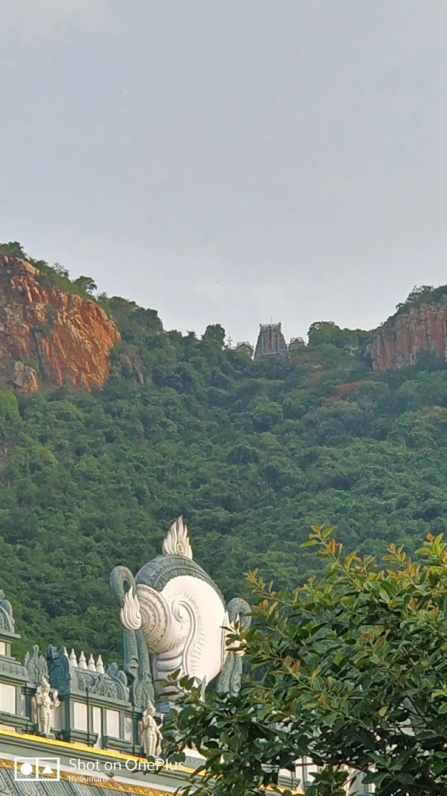
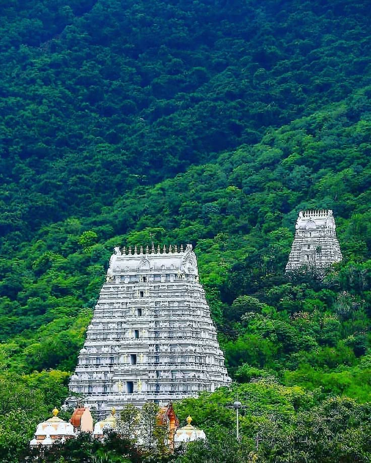
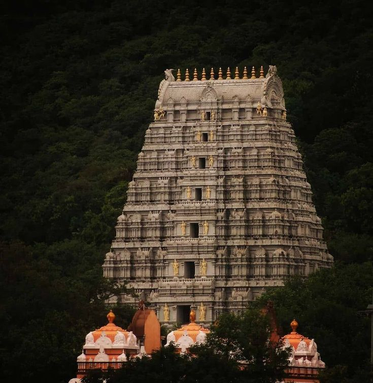
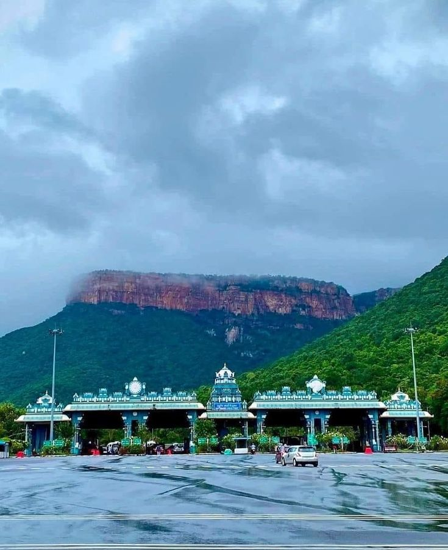
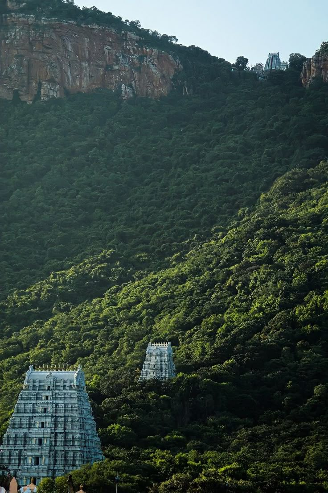
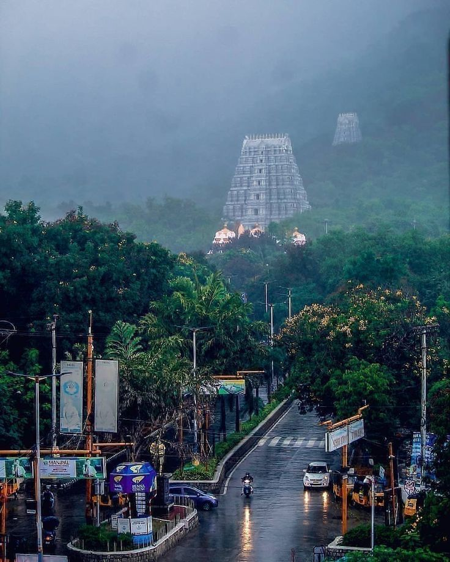
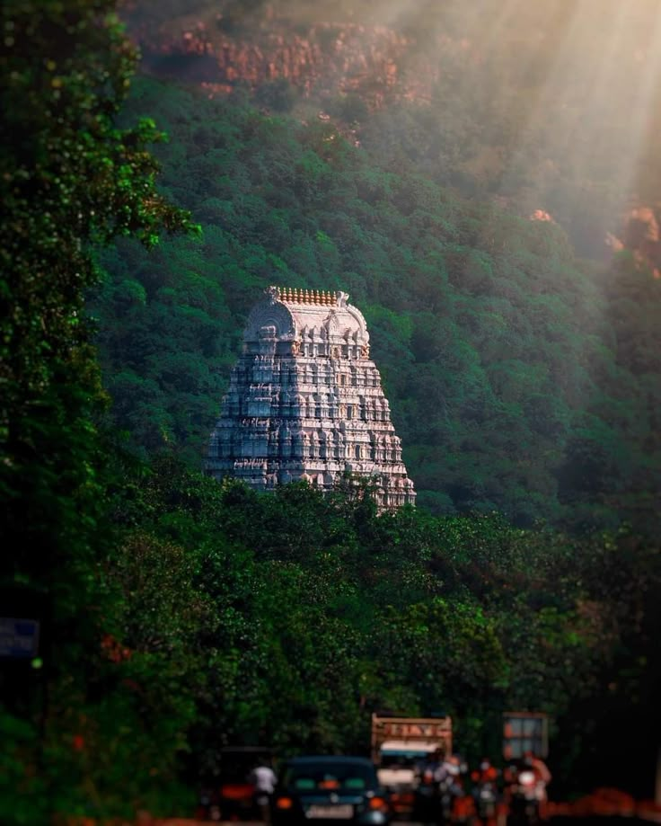
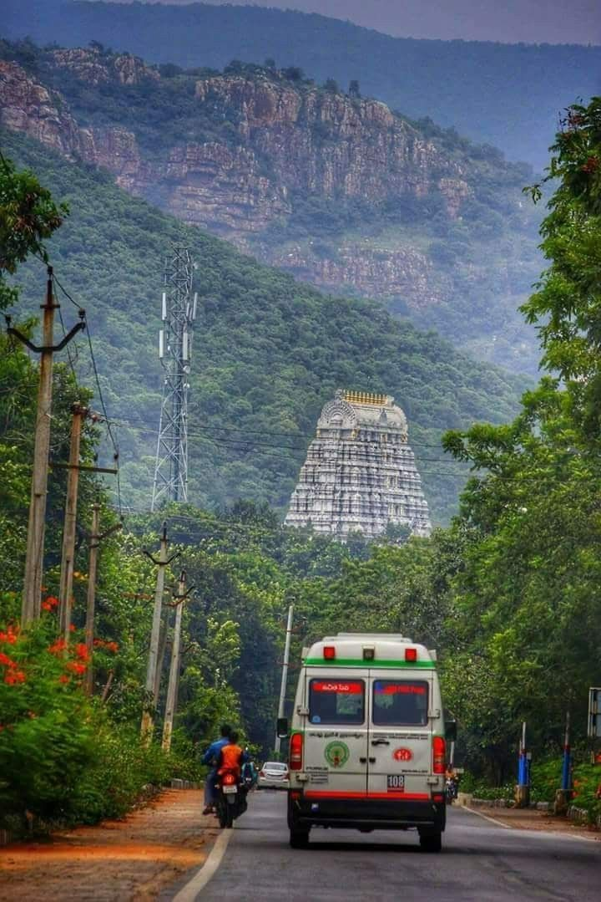

Temple images









Tirupati Balaji Temple, also known as Sri Venkateswara Temple, is one of the most famous pilgrimage sites in India. Located in Andhra Pradesh, it is dedicated to Lord Venkateswara, an incarnation of Vishnu. Millions of devotees visit every year to seek blessings, making it one of the richest and most visited temples in the world.